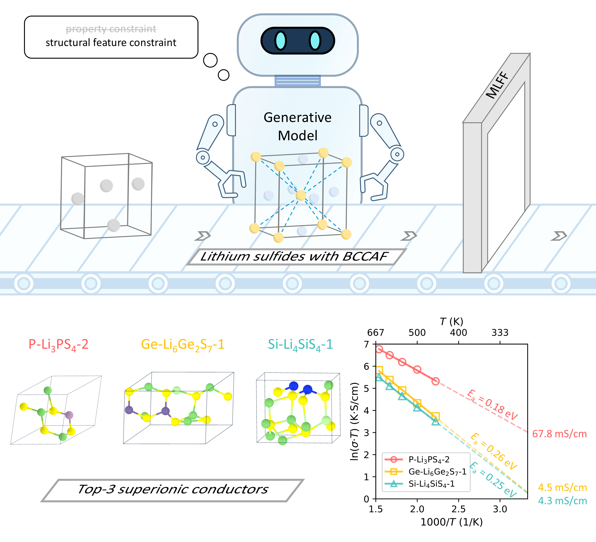

Aug 8, 2026
New Publication in Adv. Energy Mater.

We are pleased to announce that our latest research paper has been accepted for publication in Adv. Energy Mater.. Sulfide lithium superionic conductors are among the most promising solid-state electrolytes for all-solid-state lithium batteries. However, discovering novel sulfide conductors with high ionic conductivity remains challenging due to the vast chemical and structural space. In this work, we develop a structural-feature-constrained generative model that efficiently generates promising sulfide conductors by constraining key structural features. The model narrows the search space while preserving structural diversity, enabling the computational discovery of new sulfide lithium superionic conductors with high ionic conductivity and expanding the design space for solid-state electrolytes.
Title: Computational Discovery of Novel Sulfide Lithium Superionic Conductors via a Structural-Feature-Constrained Generative Model
Journal: Adv. Energy Mater. 2026, e71368
DOI: 10.1002/aenm.71368